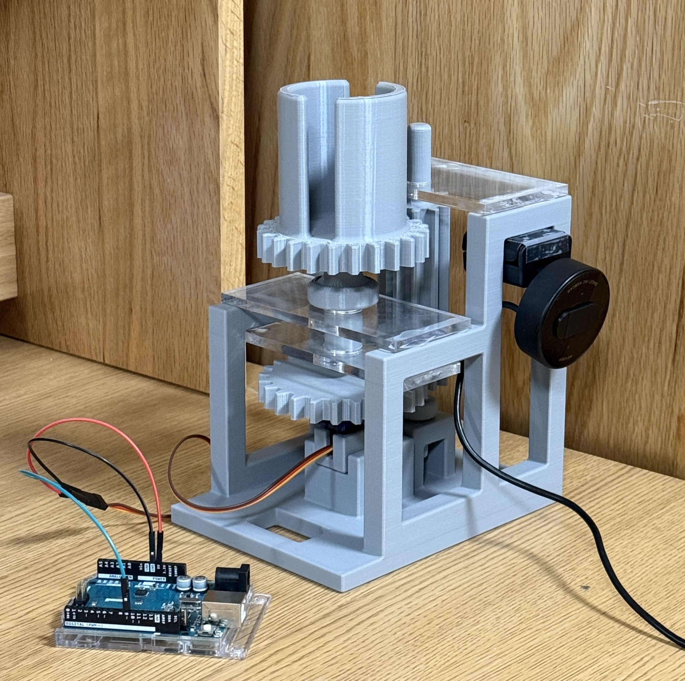

Engineering Projects

Portfolio Website
HTML • CSS • Javascript • UI Design • UX Research

Motion-Tracking Phone Mount
Solidworks • Computer Vision • Rapid Prototyping • Python • 3D Printing • Laser Cutting • Raspberry Pi • Servo Motor

Line-Following Car
3D Printing • Laser Cutting • IR Sensor • Ultrasonic Sensor • Arduino Uno • Onshape • DC Motor • Technical Drawing

Truss System Analysis
MATLAB • Force & Moment Analysis • Optimization • Technical Writing • Material Property Testing

Temperature Sensor
Arduino IDE • Onshape • Circuit Design • 3D Printing • Analog-to-Digital Conversion • Soldering • Infill Optimization